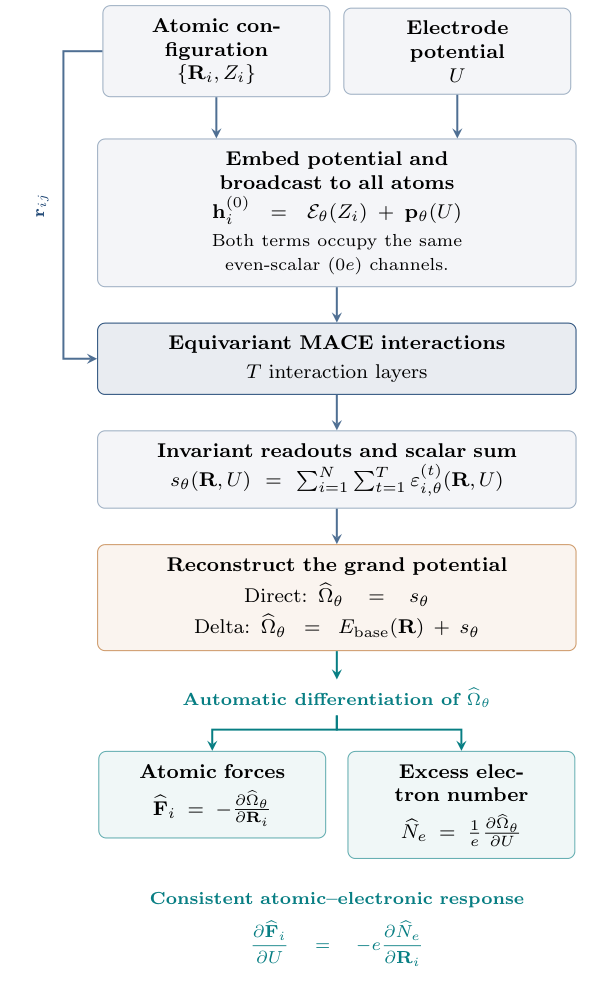
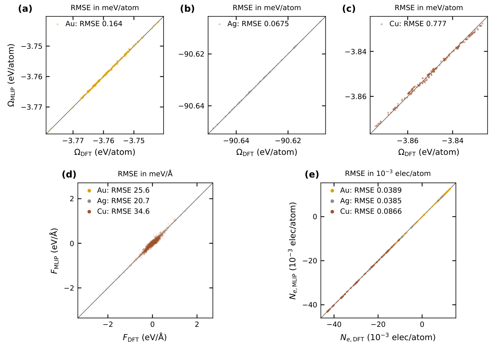
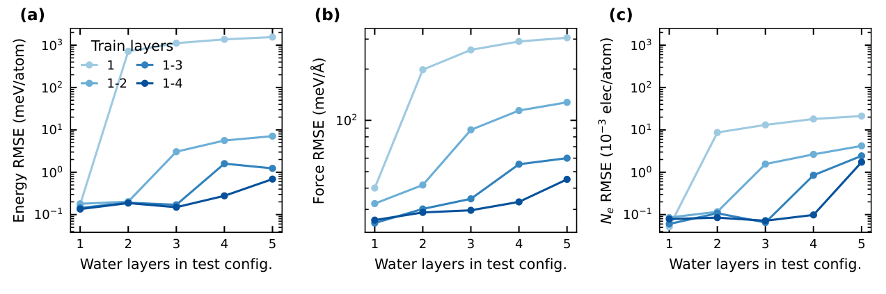
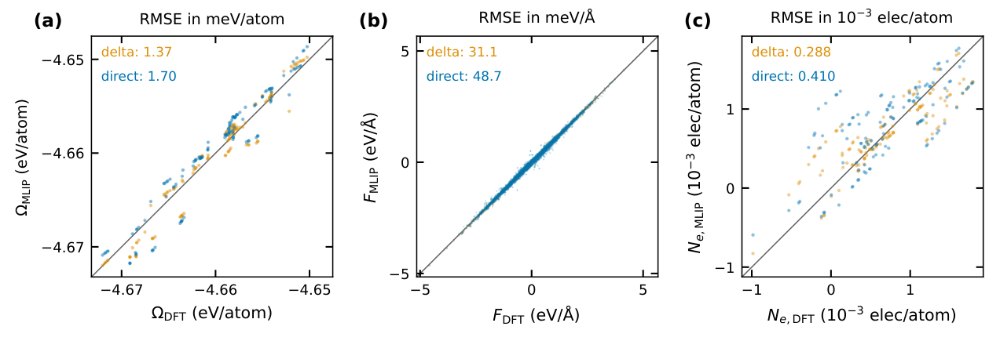
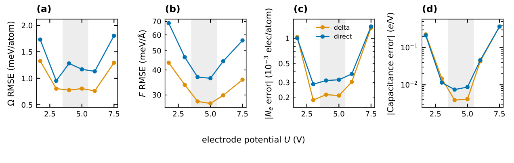
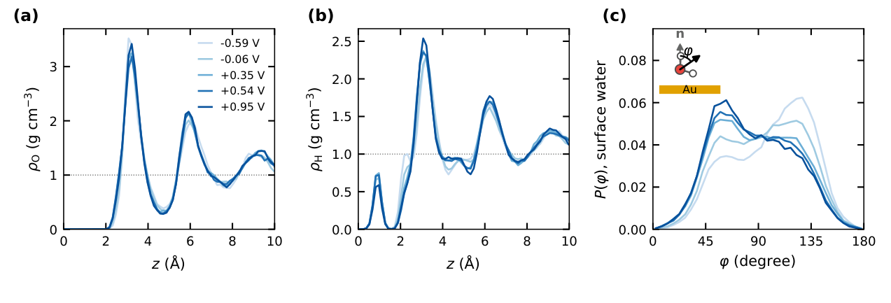

GC-MACE：让原子力与电子响应来自同一个恒电位势能面
论文原文 ↗原文：Phillip E. Pope、Timothy C. Berkelbach、Venkat Kapil，Differentiable Electronic Grand Canonical Learning for Electrochemistry，arXiv:2610.40338，2026 年 10 月 29 日。原文 ·
普通机器学习势通常接收元素和原子坐标，输出能量，再求导得到原子力。电化学界面还多了一个会改变结构和反应性的控制量：电极电位。实验中，外部电路维持电位，界面可以交换电子；水分子移动、吸附物靠近表面时，电子数也会随之调整。要模拟这种条件，模型需要同时描述原子位置、电位和电子响应之间的关系。
恒电位密度泛函理论可以计算这些量，但难以承担大体系、长时间的界面采样。已有机器学习方法会为不同电位分别训练势，或者分别预测能量与电荷。GC-MACE 的核心是学习一个随坐标和电位连续变化的标量巨势，让原子力与过剩电子数都由这个巨势求导得到。这样，两类响应在数学构造上就彼此一致，并能用于恒电位分子动力学。
为什么从能量改成巨势
先考虑一块金电极和其上方的一层含酸水。当外部电路固定电位 U 时，界面接收或放出电子所涉及的能量也必须计入。适合描述这一条件的热力学函数是巨势：
$$\Omega(R,U)=E-\mu N_e=E+eUN_e.$$
这里 R 是所有原子的位置，E 是电子势能，μ 是电子化学势，e 为正的元电荷，Ne 表示相对于无偏置参考体系的过剩电子数；电位与化学势满足 μ=−eU。电子大正则系综就是固定电子化学势、允许电子数改变的描述方式。
作者让网络直接学习 Ω(R,U)。坐标方向的斜率给出原子力，电位方向的斜率给出电子数：
$$F_i=-\frac{\partial\Omega}{\partial R_i},\qquad N_e=\frac{1}{e}\frac{\partial\Omega}{\partial U}.$$
因此，同一张势能面同时回答两类问题：“原子应往哪里运动”，以及“维持这个电位时体系应容纳多少过剩电子”。若继续对电位求导，还能得到电子微分电容，即电荷随电位改变的快慢。
电位怎样进入 MACE
GC-MACE 的一次预测接收一套原子坐标、元素种类和一个电极电位。元素先映射为原子的初始特征，电位也被一个小神经网络转换为特征向量，再加到每个原子的初始标量特征上。同一个体系中的所有原子接收同一个电位条件。
随后，MACE 在邻近原子之间传递信息，把元素、几何和电位一起转成局部环境表示。这里的等变性保证：将整个结构旋转，相关向量特征相应旋转，最终标量巨势保持不变。各原子的标量贡献相加，得到整个体系的 Ω。

图1｜元素与电位特征共同进入 MACE，原子贡献求和得到巨势，再由自动微分产生原子力和过剩电子数。
训练数据来自恒电位 DFT，同一构型带有巨势、原子力与过剩电子数标签。三类误差共同约束同一个网络。电子数与力都从一个可微函数求出，因此自动满足：
$$\frac{\partial F_i}{\partial U}=-e\frac{\partial N_e}{\partial R_i}.$$
左边描述改变电位时原子力如何变化，右边描述移动原子时电子数如何响应。这种混合导数关系来自同一个函数的求导次序可以交换，体现了原子与电子响应的热力学一致性。
怎样从训练数据走到界面动力学
作者首先使用包含 Au、Ag、Cu 三种界面的已有恒电位 DFT 数据，训练一个共享模型。数据覆盖金和银上的析氢反应步骤，以及铜上的 CO 化学吸附。输入的金属、吸附结构和电位不同，但输出始终是同一种巨势及其导数。

图2｜单个模型同时比较 Au、Ag、Cu 界面的巨势、原子力和电子数；散点靠近对角线表示与恒电位 DFT 一致。
在三种金属测试集上，巨势误差都低于 1 meV/atom，力误差约为 20.5—36.4 meV/Å。与原先分别训练金属体系、分别拟合巨势与电荷的方法比较，GC-MACE 在电子数误差上均有改善，并将原子力纳入同一联合学习。巨势精度在不同金属上的表现各有高低，主要进展是同一模型能够同时表达多金属的原子—电子响应。
作者进一步检查水膜厚度迁移。模型从较薄水膜学习后，被用来预测更厚的水膜；随着训练覆盖两层、三层和四层水，五层水测试中的巨势误差分别降至约 7.1、1.2 和 0.69 meV/atom。训练中包含局部环境的多样性，使模型更容易接到更厚的显式溶剂体系。

图3｜不同深浅的线对应训练中最多包含的水层数，横轴是测试水层数；三幅图分别观察巨势、力和电子数的迁移误差。
基础势与恒电位修正怎样组合
在主要的含酸水/Au(111)体系中，作者比较了两条训练路线。直接学习让新网络表示完整巨势；差值学习则先用一个与电位无关的预训练 MACE 基础势描述常规结构能，再由 GC-MACE 学习恒电位 DFT 与该基础势之间的差值：
$$\Omega(R,U)=E_{\mathrm{base}}(R)+\Delta\Omega(R,U).$$
基础势已有的结构信息由此被保留。最终原子力包含基础势与修正项的贡献；由于基础势不依赖电位，电子数仍完全来自修正项对电位的导数。
具体训练体系包含 18 个金原子、36 个水分子及一个额外质子，总计 127 个原子。作者从基础势轨迹选取构型，为其分配目标电位，再用恒电位 DFT 生成标签；为稳定后续动力学，还加入短 O—H 接触的数据增强，以及针对离子对构型补充的 DFT 数据。最终数据包含 904 种几何和 3,158 条标注记录，同一几何在不同电位下的记录放入同一个训练或测试分区。

图4｜含酸水/金界面中，橙色为差值学习、蓝色为直接学习。三列分别比较巨势、力和电子数。
差值路线在三类量上均更准确：巨势误差由 1.70 降至 1.37 meV/atom，力误差由 48.7 降至 31.1 meV/Å，电子数误差由约 0.410×10⁻³ 降至 0.288×10⁻³ e/atom。因此，后续动力学采用差值模型，并加入 D3 色散能和相应力。
作者还让同一模型预测更宽的电位范围。图5显示，离开训练电位窗口后，电荷以及再求一次导数得到的微分电容变化得更敏感。这个比较说明，在恒电位模型中同时考察电子响应，比只观察巨势拟合增加了一项重要的物理检验。

图5｜灰色区域是训练电位范围，四幅图分别比较巨势、力、电子数与微分电容的误差；高阶电子响应对电位变化更敏感。
一个模型怎样比较五个电位下的界面水
生产模拟把体系横向扩大为 508 个原子：三层金表面、144 个水分子及四个额外质子。作者固定一个电位，GC-MACE 每一步依据当前坐标和该电位计算巨势与力，再推进原子运动；电子数则随构型自动给出。改变电位后，继续使用同一个模型。
在 330 K、相对于标准氢电极 −0.59 至 +0.95 V 的五个电位下，每条轨迹运行 350 ps。由轨迹得到的水密度显示，水在电极附近形成明显分层，而这些层的高度与强度随电位变化较弱。更显著的变化出现在分子朝向：随着电位升高，表面水分子的偶极与外向表面法线之间的平均夹角降低，对应氧端与更正的电极之间吸引增强。

图6｜a–b 为氧和氢位置构成的水密度剖面，c 为表面水的偶极朝向分布。五种颜色对应五个电位，取向分布比密度分层更明显地随电位改变。
这将方法的几部分接成了实际模拟：恒电位 DFT 提供监督数据，预训练基础势与可微巨势修正共同描述原子结构和电位响应，最终通过一套共享模型完成较大体系、较长时间的界面采样。
值得借鉴的方法增量
GC-MACE 最值得记住的是把要满足的热力学关系写进输出构造。一张巨势面同时产生力、电子数与电容，减少不同输出之间相互矛盾的自由度；电位作为连续条件进入模型，使同一势能面覆盖多个工作点。
这为机器学习势从常规固定电子数模拟走向恒电位电化学提供了明确路线：先选对热力学势，再决定模型输入和可微输出，最后将数据、物理响应和动力学一起检验。多金属联合学习与厚水膜迁移展示了表示的扩展性，508 原子界面的长轨迹则展示了它在实际恒电位采样中的作用。
原始摘要完整中文翻译
电子大正则密度泛函理论能够描述结构和电子电荷如何响应电极电位，并结合统计力学，描述这些响应如何产生涌现现象。然而，其计算成本限制了第一性原理模拟能够达到的体系尺寸和采样时间。在此，我们提出一种可微架构，用于表示巨势，并将原子力和电子电荷作为巨势的导数获得，从而严格满足热力学一致性要求的混合导数约束；我们在等变 MACE 框架中将其实现为 GC-MACE。我们展示了多个电化学界面之间更准确的联合学习，以及相较于此前模型向更厚水膜迁移能力的改善，同时实现了在长度和时间尺度上均显著超出第一性原理分子动力学可及范围的恒电位模拟。配合广泛的训练数据，该框架为构建适用于电子大正则系综、具有热力学一致性的基础原子间势提供了一条路线。